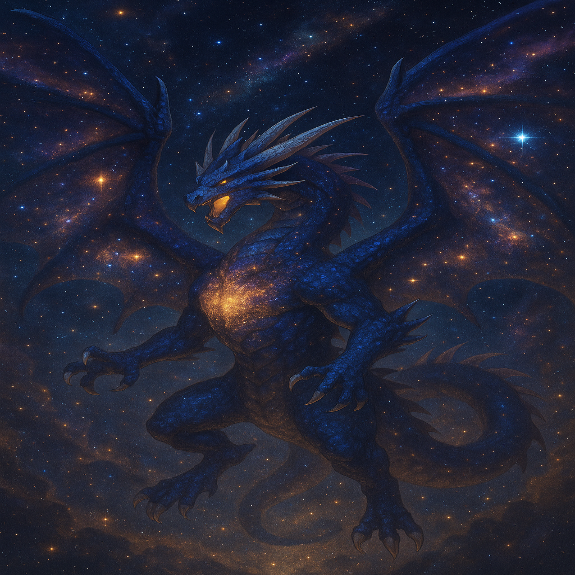
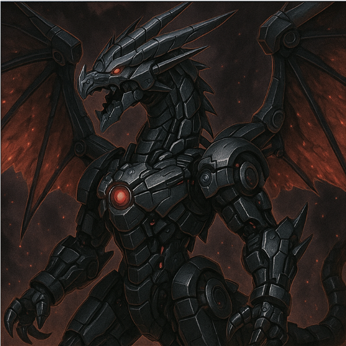
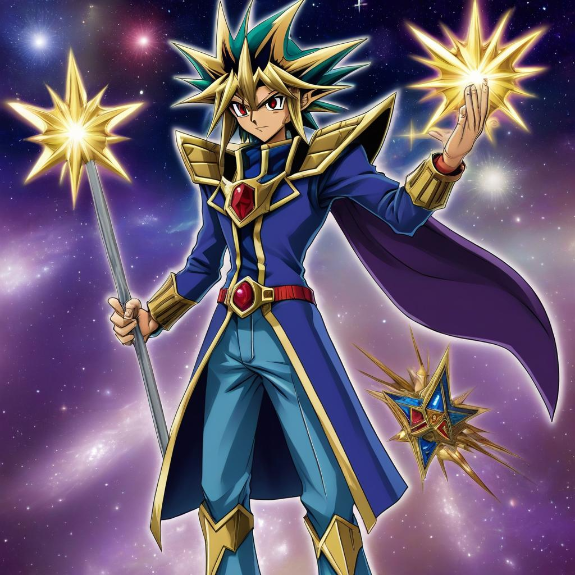
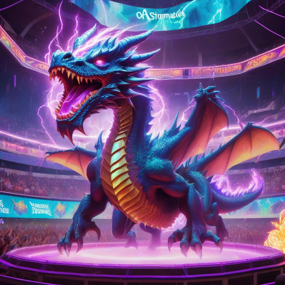

-
Cosmos Sentinel, O Guardião Galáctico

"Vindo das bordas do universo conhecido, o Cosmos Sentinel surge em meio às estrelas para manter o equilíbrio cósmico. Ele é o último bastião entre a ordem galáctica e o caos interdimensional. Forjado nos confins da Via Láctea por uma antiga civilização estelar extinta, este colosso astral permanece em vigília eterna, escutando o eco das dimensões e detectando qualquer distorção no tecido da realidade. Seu corpo é composto por ligas estelares e escudos gravitacionais, capaz de resistir à pressão de buracos negros e ao impacto de supernovas. Quando o caos ameaça se infiltrar nos planos cósmicos, o Cosmos Sentinel se materializa como um juiz implacável, anulando forças sombrias e restaurando a estabilidade entre galáxias. Sua presença impõe silêncio ao espaço e reverência até aos deuses antigos do vácuo sideral."
ATK/ 2800 DEF/ 2500 -
NebulaDragon, O Ser Das Estrelas Eternas
"Uma entidade lendária formada nos confins do universo, NebulaDragon é um dragão cósmico cujo corpo brilha com o brilho de bilhões de estrelas antigas. Dizem que ele surge apenas quando o equilíbrio entre luz e trevas no cosmos é ameaçado. Com cada batida de suas asas, nebulosas inteiras se formam, e seu rugido ecoa entre galáxias esquecidas."
ATK/ 3200 DEF/ 2000 -
CyberBlade Paladin, O Cavaleiro Digital

"Este guerreiro lendário funde a honra dos cavaleiros antigos com a tecnologia das redes cibernéticas. Ele carrega uma lâmina forjada em dados e honra, cortando os inimigos com justiça digital. Originado dos domínios sagrados do Código Central, CyberBlade Paladin patrulha o fluxo das redes como um guardião incorruptível, purificando sistemas corrompidos e restaurando a ordem digital com sua espada de energia pura. Seus reflexos são calibrados por algoritmos quânticos, e sua armadura é um relicário de códigos ancestrais, imune a ataques convencionais. Quando invocado, ele ergue um firewall sagrado que protege seus aliados e desfere golpes tão rápidos quanto um pulso de dados — julgando seus oponentes com precisão binária e fervor cavalheiresco."
ATK/ 2600 DEF/ 2300 -
MechaDragon X, O Dragão Biomecanico
"Fruto da união entre tecnologia proibida e essência dracônica ancestral, MechaDragon X é um titã biomecânico que transcende os limites entre o orgânico e o artificial. Seu corpo é composto de ligas vivas e circuitos conscientes, com asas que disparam rajadas de energia negra e garras que trituram até mesmo a matéria mais densa. Forjado nos laboratórios secretos de uma civilização extinta, ele desperta apenas em tempos de guerra absoluta."
ATK/ 3500 DEF/ 3000 -
Archnage Stellarion, O Guardião Das Estrelas
"Este monstro simboliza a essência das estrelas, irradiando um brilho eterno que protege o universo e defende incansavelmente a harmonia cósmica com seu poder celestial imensurável. Forjado no coração de uma supernova ancestral, Stellarion surge como um avatar da ordem universal, canalizando constelações inteiras para selar as forças do caos. Seu rugido ressoa como uma sinfonia galáctica, capaz de restaurar o equilíbrio entre luz e trevas. Aqueles que ousam desafiá-lo enfrentam a força total de um cosmos em fúria — um poder que transcende o tempo e o espaço, guardando os pilares da criação."
ATK/ 3000 DEF/ 2800 -
Stormbriger Dragon, O Arauto Das Tempestades
"Com sua presença tempestuosa, Stormbringer Dragon traz a fúria dos céus, comandando as tempestades e dominando o campo com sua força celestial. Quando invocado, ele desencadeia a fúria das tempestades, devastando tudo ao seu redor. Forjado no coração de um cataclismo ancestral, este dragão elementar voa entre as nuvens eternas onde relâmpagos nascem e trovões ganham voz. Suas asas rasgam o firmamento, deixando rastros de energia elétrica pura, enquanto seus rugidos fazem as nuvens tremerem como se o próprio céu temesse sua fúria. Cada batida de suas asas invoca ventos cortantes, chuvas corrosivas e trovões destrutivos que varrem o campo de batalha sem piedade. Stormbringer Dragon não é apenas um monstro — é o próprio juízo da tempestade, um presságio da destruição celestial que recairá sobre os que ousarem desafiar os céus.."
ATK/ 2900 DEF/ 2100